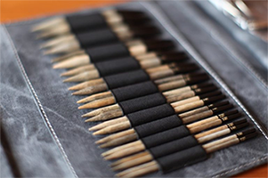
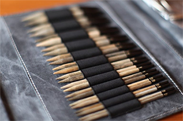

Juniper Moon Cumulus Dromedary - DK Findley Findley Dappled - lace Herriot Herriot Fine Neve Stargazer Tenzing Zooey
Ella Rae Cozy Alpaca Chunky Cozy Soft Cozy Soft Prints Cozy Soft Chunky Cozy Soft Chunky Prints Huenique Lace Merino Lace Merino Aran Lace Merino - sport Lace Merino - DK Phoenix DK Prints Seasons Sun Kissed
Knitting Fever Chromatic Chunky Indulgence Cashmere Luxury Silk Sport Painted Desert Painted Mist Painted Sky
Sweet Georgia Yarns Party of Five Gradient Sets Prismatic Mini-Mini yarn set Tough Love Sock Superwash Worsted
Berroco Cirrus Comfort Chunky Comfort Sox Ultra Alpaca Chunky Ultra Alpaca Vintage Chunky Vintage DK Vintage Weekend Chunky
Diamond Yarn Diamond Luxury Footloose Highlander Impression Katia Belice Pima Lino Colori Pima Lino Lace Soxy Lady Tip Toe Tradition Chunky Tradition Diamond Select Footsie Jewel Metallic Olivia Hayfield Chunky with Wool Illusion DK Spirit Little Darlings Jack & Jill Katia Ombre gradient sets NOVA NOVA plus Sock Sirdar Aura Chunky Baby Crofter DK - Fair Isle Effect Beachcomber Crofter DK - Fair Isle Effect Dapple DK Harrap Tweed DK Smudge Snuggly 3-ply Snuggly 4-ply Snuggly Baby Bamboo Snuggly Baby Cotton DK Snuggly Bubbly Snuggly DK Snuggly Snowflake DK
H.A. Kidd Universal Yarns Bella Chenille & Chenille Multi Deluxe Worsted Tweed Superwash Downton Abbey - Lady Sybil Little Bird Major Uptown Worsted Wisdom Yarns Allegro Naked Sock Pix Poems Silk Poems Sock Saki Silk Rozetti Cotton Gold
Estelle Yarns Alpaca Merino Fine Baby Bunting Big Alpaca Bulky Estelle Chunky Hudson King Cole Corona Chunky King Cole Baby Glitz King Cole Riot DK Sudz Cascade Anthem Avalon Cherub Aran Cherub Chunky Ultra Pima
Classic Elite Firefly Fresco Silky Alpaca Lace Vail Thomas B. Ramsden Peter Pan Cupcake Peter Pan Lustre DK Wendy Evolution
Needles from Diamond Yarn Chiao Goo Bamboo 13" Straights Bamboo DPN's Red Line Circulars Stainless Steel 6" DPN's Knitters' Pride Basix - 8.0, 9.0, 10.0, 12.0 & 15.0mm Cubics Dreamz - DPN's Dreamz - circulars Dreamz - straights Karbonz DPN's (2.25, 2.5, 2.75)
Buttons and Notions Eucalan - all varieties handmade beaded stitch markers metal notions cases pewter clasps plastic stitch counters toggles wood
Crosstitching John James needles Q-snap frames full line of DMC cotton floss pre-cut Aida cloth in various counts, sizes & colours
Magazines and Books Asst of current books including Stephanie Pearl-McPhee Interweave Knits Knit Scene Knit Wear Qty. of discontinued magazines and books Vogue Knitting


 
